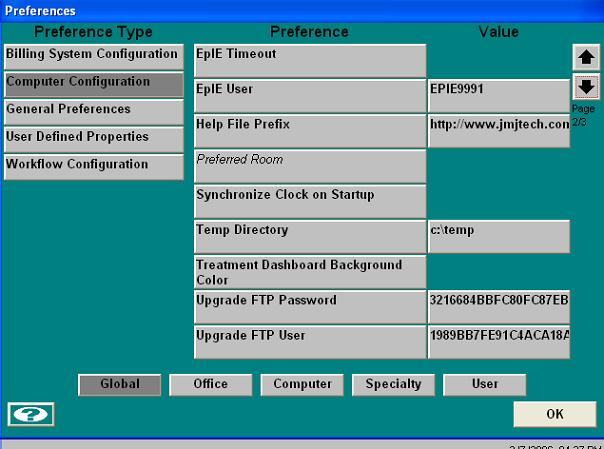
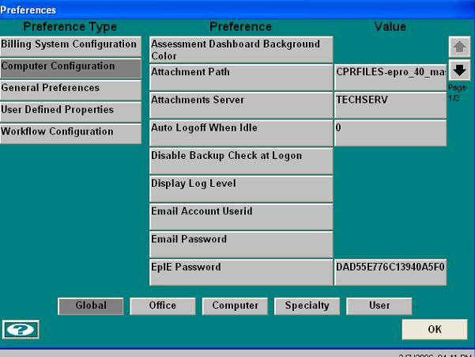

Additional Instruction
| Handoff Document:: |
Handoff Document: Installation and Configuration of EPIE 1.0 |
| System Information: | |
| Design Overview: | |
| Installation: |
SETUP CUSTOMER EPIE CREDENTIALS IN ENCOUNTERPRO Please follow the steps below to enable a customer to use our secured Gateway (access to EncounterPRO Integration Engine (EPIE)) to upload and download messages. Step1: go to configuration-> preferences (Preference Type-EpIE Preferences, Global) Step2: Enter the EPIE user name [usually like 'EPIE<customer id>'. (example: EPIE9991)] that was created in EPIE-CMA for this customer.

Step3: now fill in the EPIE password (usually $!Epro&&*) that was created for this customer in EPIE. The password is encrypted and stored in database.
 Now a valid EPIE user is assigned for EncounterPRO to make a secured connection to a server in JMJ office in Atlanta to upload and download messages to and from customer to JMJ server.
Step 4: Run Db Maintenance and then select "Check Epie"
|
| Confirmation: | |
| Keywords: |
Installation Configuration EPiE Handoff |
| ID: 040827521535995 | Last Modified: 05/19/2009 11:23:45 AM |